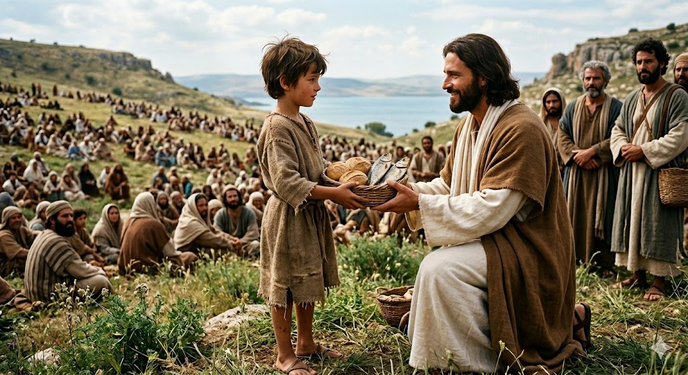
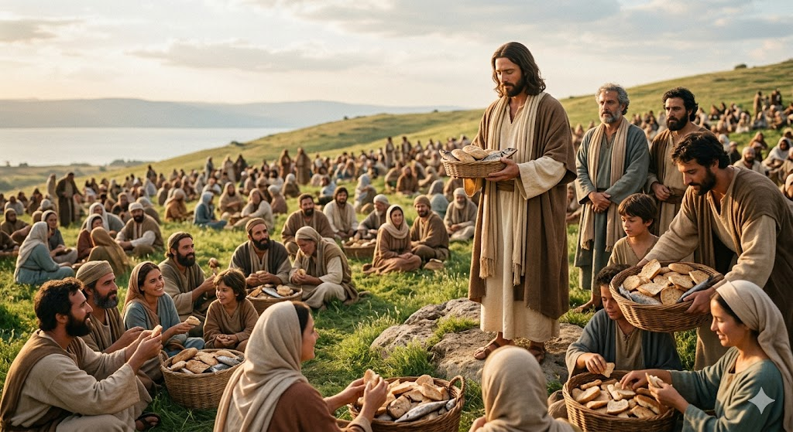
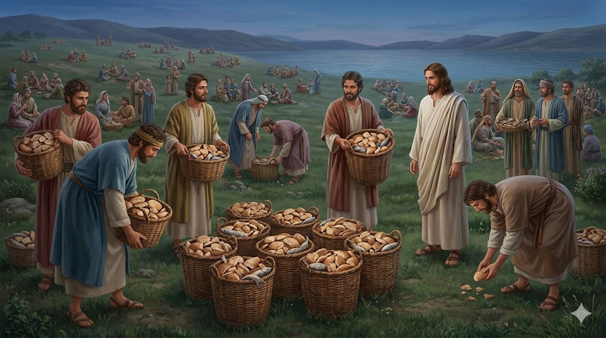

Mii de oameni s-au adunat să asculte povești frumoase pe un munte, dar s-a făcut seară și tuturor le era foarte foame. Nimeni nu avea mâncare, în afară de un băiețel care avea la el un pachețel mic.
1. Un Dar din Inimă
Băiețelul avea doar cinci pâinișoare și doi pești mici. Ar fi putut să îi mănânce singur, dar a ales să îi ofere lui Iisus. Deși ucenicii credeau că e mult prea puțin pentru atâția oameni, Iisus a zâmbit și a primit darul cu drag.

2. Minunea de pe Iarbă
Iisus a mulțumit lui Dumnezeu pentru mâncare și a început să o împartă. Și s-a întâmplat ceva incredibil: pe măsură ce dădea pâinea mai departe, coșurile nu se goleau niciodată! Toți cei 5.000 de oameni au mâncat pe săturate, stând liniștiți pe iarbă.

3. Mai mult decât destul
La final, după ce toată lumea s-a săturat, Iisus i-a rugat pe ucenici să strângă firimiturile. S-au adunat 12 coșuri pline cu resturi! Asta ne arată că atunci când dăruim cu inima bună, Dumnezeu ne dă înapoi mult mai mult decât am oferit.

„Este aici un băieţel care are cinci pâini de orz şi doi peşti; dar ce sunt acestea la atâţia?”
- Ioan 6:9
🌟 Concluzia Noastră
Nu ești niciodată prea mic ca să fii de ajutor! Dacă împarți ceea ce ai cu ceilalți, Dumnezeu transformă gestul tău mic într-o binecuvântare uriașă pentru toată lumea.
🧺 Știai că?
Numărul de 5.000 de oameni îi număra doar pe bărbați! Dacă punem la socoteală și femeile și copiii care erau acolo, probabil au fost peste 10.000 de oameni hrăniți dintr-un singur pachețel mic de prânz!